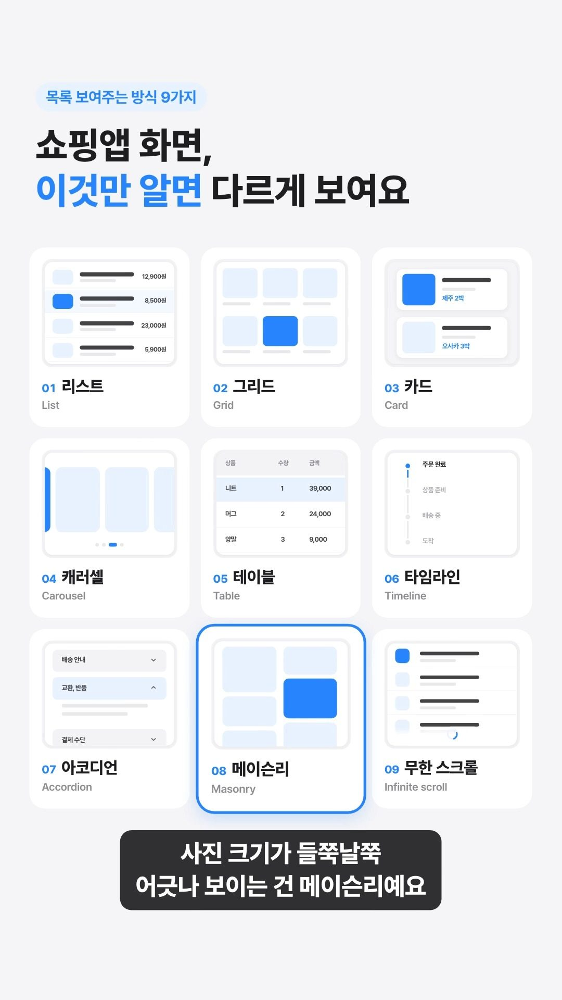

테크 · 릴스 · 2026-11-23
쇼핑앱 화면에서 목록을 보여주는 UI 패턴 이름
쇼핑앱에서 상품 목록을 보여주는 리스트, 그리드, 캐러셀, 메이슨리, 무한 스크롤 등 UI 패턴의 이름과 특징을 소개한다.

- 상품이 한 줄씩 쭉 내려오는 형태는 리스트(List)라고 부른다.
- 바둑판처럼 놓인 형태는 그리드(Grid)다.
- 옆으로 넘기는 배너는 캐러셀(Carousel)이라고 부른다.
- 사진 크기가 들쑥날쑥 어긋나 보이는 메이슨리(Masonry)는 일부러 그렇게 만든 레이아웃이다.
- 내려도 끝이 나지 않는 형태는 무한 스크롤(Infinite Scroll)이다.
- 이미지에는 카드, 테이블, 타임라인, 아코디언까지 포함해 목록을 보여주는 방식 9가지가 정리되어 있다.